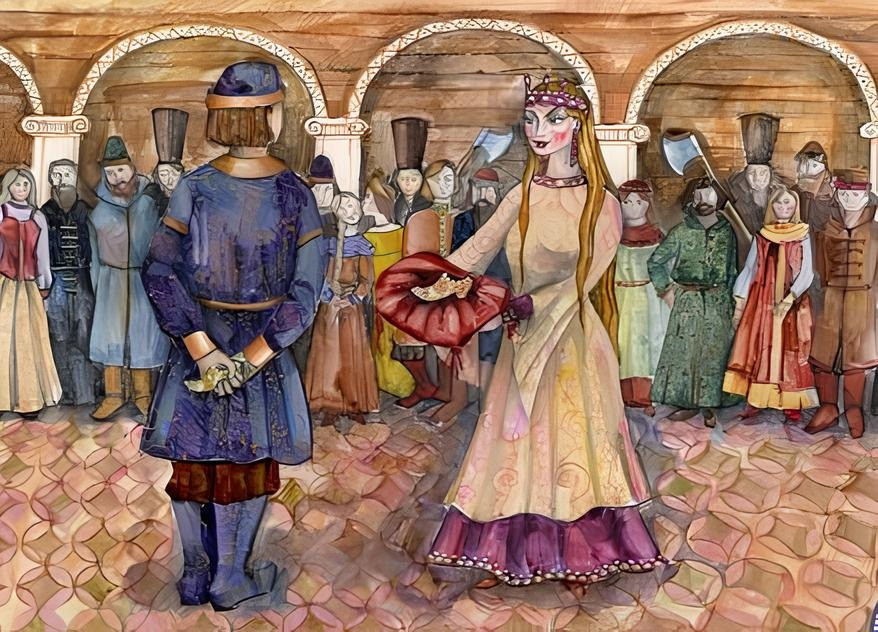

Вещий сон

Жил-был купец, у него было два сына: Дмитрий да Иван. Раз вечером сказал им отец:
— Ну, дети, кому что во сне привидится, поутру мне поведайте; а кто утаит свой сон, того казнить велю.
Вот наутро приходит старший сын и сказывает отцу:
— Снилось мне, батюшка, будто брат Иван высоко летал по поднебесью на двенадцати орлах; да еще будто пропала у тебя любимая овца.
— А тебе, Ваня, что привиделось?
— Не скажу! — отвечал Иван.
Сколько отец ни принуждал его, он уперся и на все увещания одно твердил: “Не скажу!” да “Не скажу!” Купец рассердился, позвал своих приказчиков и велел взять непослушного сына и привязать к столбу на большой дороге.
Приказчики схватили Ивана и, как сказано, привязали его к столбу крепко-накрепко. Плохо пришлось доброму молодцу: солнце печет его, голод и жажда измучили.
Случилось ехать по той дороге молодому царевичу; увидал он купеческого сына, сжалился и велел освободить его, нарядил в свою одежду, привез к себе во дворец и начал расспрашивать:
— Кто тебя к столбу привязал?
— Родной отец прогневался.
— Чем же ты провинился?
— Не хотел рассказать ему, что мне во сне привиделось.
— Ах, как же глуп твой отец, за такую безделицу да так жестоко наказывать… А что тебе снилось?
— Не скажу, царевич!
— Как не скажешь? Я тебя от смерти избавил, а ты мне грубить хочешь? Говори сейчас, не то худо будет!
— Отцу не сказал и тебе не скажу!
Царевич приказал посадить его в темницу; тотчас прибежали солдаты и отвели его в каменный мешок.
Прошел год, вздумал царевич жениться, собрался и поехал в чужедальнее государство свататься к Елене Прекрасной. У того царевича была родная сестра, и вскоре после его отъезда случилось ей гулять возле самой темницы.
Увидал ее в окошечко Иван — купеческий сын и закричал громким голосом:
— Смилуйся, царевна, выпусти меня на волю! Может, и я пригожуся. Ведь я знаю, что царевич поехал к Елене Прекрасной свататься; только без меня ему не жениться, а разве головой поплатиться. Чай, сама слышала, какая хитрая Елена Прекрасная и сколько женихов на тот свет спровадила.
— А ты берешься помочь царевичу?
— Помог бы, да крылья у сокола связаны.
Царевна тотчас же отдала приказ выпустить его из темницы.
Иван — купеческий сын набрал себе товарищей, и было всех их и с Иваном двенадцать человек, а похожи друг на дружку словно братья родные — рост в рост, голос в голос, волос в волос. Нарядились они в одинаковые кафтаны, по одной мерке шитые, сели на добрых коней и поехали в путь-дорогу.
Ехали день, и два, и три; на четвертый подъезжают к дремучему лесу, и послышался им страшный крик.
— Стойте, братцы! — говорит Иван. — Подождите немножко, я на тот шум пойду.
Соскочил с коня и побежал в лес; смотрит — на поляне три старика ругаются.
— Здравствуйте, старые! Из-за чего у вас спор?
— Эх, младой юноша! Получили мы от отца в наследство три диковинки: шапку-невидимку, ковер-самолет и сапоги-скороходы; но вот уже семьдесят лет, как спорим, а поделиться никак не можем.
— Хотите, я вас разделю?
— Сделай милость!
Иван — купеческий сын натянул свой тугой лук, наложил три стрелочки и пустил в разные стороны; одному старику велит направо бежать, другому — налево, а третьего посылает прямо:
— Кто из вас первый принесет стрелу, тому шапка-невидимка достанется; кто второй явится, тот ковер-самолет получит; а последний пусть возьмет сапоги-скороходы.
Старики побежали за стрелками, а Иван — купеческий сын забрал все диковинки и вернулся к своим товарищам.
— Братцы, — говорит, — пускайте своих добрых коней на волю да садитесь ко мне на ковер-самолет.
Живо уселись все на ковер-самолет и полетели в царство Елены Прекрасной.
Прилетели к ее стольному городу, опустились у заставы и пошли разыскивать царевича. Приходят на его двор.
— Что вам надобно? — спросил царевич.
— Возьми нас, добрых молодцев, к себе на службу; будем тебе радеть и добра желать от чистого сердца.
Царевич принял их на свою службу и распределил: кого в повара, кого в конюхи, кого куда.
В тот же день нарядился царевич по-праздничному и поехал представляться Елене Прекрасной. Она его встретила ласково, угостила всякими яствами и дорогими напитками и потом стала спрашивать:
— А скажи, царевич, по правде, зачем к нам пожаловал?
— Да хочу, Елена Прекрасная, к тебе посвататься; пойдешь ли за меня замуж?
— Пожалуй, я согласна; только выполни наперед три задачи. Если выполнишь — буду твоя, а нет — готовь свою голову под острый топор.
— Задавай задачу!
— Будет у меня завтра, а что — не скажу; ухитрись-ка, царевич, да принеси к моему незнаемому свое под пару.
Воротился царевич на свою квартиру в большой кручине и печали. Спрашивает его Иван — купеческий сын:
— Что, царевич, невесел? Али чем досадила Елена Прекрасная? Поделись своим горем со мной, тебе легче будет.
— Так и так, — отвечает царевич, — задала мне Елена Прекрасная такую задачу, что ни один мудрец в свете не разгадает.
— Ну, это еще небольшая беда! Ложись спать; утро вечера мудренее, завтра дело рассудим.
Царевич лег спать, а Иван — купеческий сын надел шапку-невидимку да сапоги-скороходы — и марш во дворец к Елене Прекрасной; вошел прямо в почивальню и слушает. Тем временем Елена Прекрасная отдавала такой приказ своей любимой служанке:
— Возьми эту дорогую материю и отнеси к башмачнику: пусть сделает башмачок на мою ногу, да как можно скорее.
Служанка побежала куда приказано, а следом за ней и Иван пошел.
Мастер тотчас же за работу принялся, живо сделал башмачок и поставил на окошко; Иван — купеческий сын взял тот башмачок и спрятал потихоньку в карман.
Засуетился бедный башмачник — из-под носу пропала работа; уж он искал, искал, все уголки обшарил — все понапрасну! “Вот чудо! — думает. — Никак, нечистый со мной пошутил!” Нечего делать, взялся опять за иглу, сработал другой башмачок и понес к Елене Прекрасной.
— Экий ты мешкотный! — сказала Елена Прекрасная. — Сколько времени за одним башмачком провозился!
Села она за рабочий столик, начала вышивать башмак золотом, крупным жемчугом унизывать, самоцветными камнями усаживать.
А Иван тут же очутился, вынул свой башмачок и сам то же делает: какой она возьмет камушек, такой и он выбирает; где она приткнет жемчужину, так и он насаживает.
Кончила работу Елена Прекрасная, улыбнулась и говорит:
— С чем-то царевич завтра покажется!
“Подожди — думает Иван, — еще неведомо, кто кого перехитрит!”
Воротился домой и лег спать; на заре на утренней встал он, оделся и пошел будить царевича; разбудил и дает ему башмачок.
— Поезжай, — говорит, — к Елене Прекрасной и покажи башмачок — это ее первая задача!
Царевич умылся, принарядился и поскакал к невесте; а у ней гостей собрано полны комнаты — все бояре да вельможи, люди думные. Как приехал царевич, тотчас заиграла музыка, гости с мест повскакивали, солдаты на караул сделали.
Елена Прекрасная вынесла башмачок, крупным жемчугом унизанный, самоцветными камнями усаженный; а сама глядит на царевича, усмехается. Говорит ей царевич:
— Хорош башмак, да без пары ни на что не пригоден! Видно, надо подарить тебе другой такой же!
С этим словом вынул он из кармана другой башмачок и положил его на стол. Тут все гости в ладоши захлопали, в один голос закричали:
— Ай да царевич! Достоин жениться на нашей государыне, на Елене Прекрасной.
— А вот увидим! — отвечала Елена Прекрасная. — Пусть исполнит другую задачу.
Вечером поздно воротился царевич домой еще пасмурней прежнего.
— Полно, царевич, печалиться! — сказал ему Иван — купеческий сын. — Ложись спать, утро вечера мудренее.
Уложил его в постель, а сам надел сапоги-скороходы да шапку-невидимку и побежал во дворец к Елене Прекрасной. Она в то самое время отдавала приказ своей любимой служанке:
— Сходи поскорей на птичий двор да принеси мне уточку. Служанка побежала на птичий двор, а Иван за нею; служанка ухватила уточку, а Иван — селезня и тем же путем назад пришел.
Елена Прекрасная села за рабочий столик, взяла утку, убрала ей крылья лентами, хохолок — бриллианта ми; Иван — купеческий сын смотрит да то же творит над селезнем.
На другой день у Елены Прекрасной опять гости, опять музыка; выпустила она свою уточку и спрашивает царевича:
— Угадал ли мою задачку?
— Угадал, Елена Прекрасная! Вот к твоей уточке пара, — и пускает тотчас селезня…
Тут все бояре в один голос крикнули:
— Ай да молодец царевич! Достоин взять за себя Елену Прекрасную!
— Постойте, пусть исполнит наперед третью задачу. Вечером воротился царевич домой такой пасмурный, что и говорить не хочет.
— Не тужи, царевич, ложись лучше спать; утро вечера мудренее, — сказал Иван — купеческий сын.
Сам скорей надел шапку-невидимку да сапоги-скороходы и побежал к Елене Прекрасной. А она собралась на синее море ехать, села в коляску и во всю прыть понеслася; только Иван — купеческий сын ни на шаг не отстает.
Приехала Елена Прекрасная к морю и стала вызывать своего дедушку. Волны заколыхалися, и поднялся из воды старый дед — борода у него золотая, на голове волосы серебряные. Вышел он на берег:
— Здравствуй, внучка! Давненько я с тобою не виделся: все волосы перепутались — причеши.
Лег к ней на колени и задремал сладким сном. Елена Прекрасная чешет деда, а Иван — купеческий сын у ней за плечами стоит.
Видит она, что старик заснул, и вырвала у него три серебряных волоса; а Иван — купеческий сын не три волоса — целый пучок выхватил. Дед проснулся и закричал:
— Что ты! Ведь больно!
— Прости, дедушка! Давно тебя не чесала, все волоса перепутались.
Дед успокоился и немного погодя опять заснул. Елена Прекрасная вырвала у него три золотых волоса; а Иван — купеческий сын схватил его за бороду и чуть не всю оторвал.
Страшно вскрикнул дед, вскочил на ноги и бросился в море.
“Теперь царевич попался! — думает Елена Прекрасная. — Таких волос ему не добыть”.
На следующий день собрались к ней гости; приехал и царевич. Елена Прекрасная показывает ему три волоса серебряные да три золотые и спрашивает:
— Видал ли ты где этакое диво?
— Нашла чем хвастаться! Хочешь, я тебе целый пучок подарю?
Вынул и подал ей клок золотых волос да клок серебряных.
Рассердилась Елена Прекрасная, побежала в свою почивальню и стала смотреть в волшебную книгу: сам ли царевич угадывает или кто ему помогает? И видит по книге, что не он хитер, а хитер его слуга, Иван — купеческий сын.
Воротилась к гостям и пристала к царевичу:
— Пришли ко мне своего любимого слугу.
— У меня их двенадцать.
— Пришли того, что Иваном зовут.
— Да их всех зовут Иванами!
— Хорошо, — говорит, — пусть все придут! — А в уме держит: “Я и без тебя найду виноватого!”
Отдал царевич приказание — и вскоре явились во дворец двенадцать добрых молодцев, его верных слуг; все на одно лицо, рост в рост, голос в голос, волос в волос.
— Кто из вас большой? — спросила Елена Прекрасная.
Они разом все закричали:
— Я большой! Я большой!
“Ну, — думает она, — тут спроста ничего не узнаешь!”- и велела подать одиннадцать простых чарок, а двенадцатую золотую, из которой завсегда сама пила; налила те чарки дорогим вином и стала добрых молодцев потчевать.
Никто из них не берет простой чарки, все к золотой потянулись и давай ее вырывать друг у друга: только шуму наделали да вино расплескали!
Видит Елена Прекрасная, что шутка ее не удалася; велела этих молодцев накормить-напоить и спать во дворце положить.
Вот ночью, как уснули все крепким сном, она пришла к ним с своею волшебною книгою, глянула в ту книгу и тотчас узнала виновного; взяла ножницы и остригла у него висок.
“По этому знаку я его завтра узнаю и велю казнить”.
Поутру проснулся Иван — купеческий сын, взялся рукою за голову — а висок-то острижен; вскочил он с постели и давай будить товарищей:
— Полно спать, беда близко! Берите-ка ножницы да стригите виски.
Через час времени позвала их к себе Елена Прекрасная и стала отыскивать виноватого… Что за чудо? На кого ни взглянет — у всех виски острижены. С досады ухватила она свою волшебную книгу и забросила в печь.
После того нельзя было ей отговариваться, надо было выходить замуж за царевича. Свадьба была веселая; три дня народ веселился, три дня кабаки и харчевни стояли отворены — кто хочешь приходи, пей и ешь на казенный счет!
Как покончились пиры, царевич собрался с молодою женой ехать в свое государство, а двенадцать добрых молодцев вперед отпустил.
Вышли они за город, разостлали ковер-самолет, сели и поднялись выше облака ходячего; летели, летели и опустились как раз у того дремучего леса, где своих добрых коней покинули.
Только успели сойти с ковра, глядь — бежит к ним старик со стрелкою. Иван — купеческий сын отдал ему шапку-невидимку. Вслед за тем прибежал другой старик и получил ковер-самолет, а там и третий — этому достались сапоги-скороходы.
Говорит Иван своим товарищам:
— Седлайте, братцы, лошадей, пора в путь отправляться.
Они тотчас изловили лошадей, оседлали их и поехали в свое отечество.
Приехали и прямо к царевне явились; та им сильно обрадовалась, расспросила о своем родном братце: как он женился и скоро ль домой будет?
— Чем же вас, — спрашивает, — за такую службу наградить?
Отвечает Иван — купеческий сын:
— Посади меня в темницу, на старое место.
Как его царевна ни уговаривала, он таки настоял на своем: взяли его солдаты и отвели в темницу.
Через месяц приехал царевич с молодою супругою; встреча была торжественная: музыка играла, в пушки палили, в колокола звонили, народу собралось столько, что хоть по головам ступай!
Пришли бояре и всякие чины представляться царевичу; он осмотрелся кругом и стал спрашивать:
— Где же Иван, мой верный слуга?
— Он, — говорят, — в темнице сидит.
— Как в темнице? Кто смел посадить? Говорит ему царевна:
— Ты же сам, братец, на него опалился и велел держать в крепком заточении. Помнишь, что его про какой-то сон расспрашивал, а он сказать не хотел?
— Неужели ж это он?
— Он самый; я его на время к тебе отпускала.
Царевич приказал привести Ивана — купеческого сына, бросился к нему на шею и просил не попомнить старого зла.
— А знаешь, царевич, — говорит ему Иван, — все, что с тобою случилося, мне было наперед ведомо, все это я во сне видел; оттого тебе и про сон не сказывал.
Царевич наградил его генеральским чином, наделил богатыми именьями и оставил во дворце жить.
Иван — купеческий сын выписал к себе отца и старшего брата, и стали они все вместе жить-поживать, добра наживать.